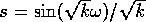
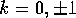

The Robertson-Walker (RW) metric is well known in General Relativity as a representation of a universe filled with a pressureless dust. The line-element is usually written in the form:
where is the time-dependent scale factor, and  for .
In terms of a metric tensor, the RW metric is written as

We shall use an indexed object to represent this metric, as described below.